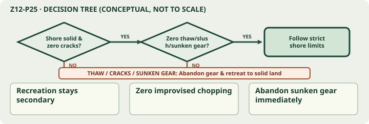

Z12-P25 · Extreme environments · Adapted historical material
Prioritize life safety over winter angling or gear recovery on uncertain ice
Prevent fatal drownings triggered by chasing late-season fish, improvising ice holes or retrieving sunken gear.
When it applies · Winter fishing, snowmobiling and shoreline recreation during early freeze and late spring thaw.
Equipment · Current local ice conditions, shore-based decision discipline and emergency contact plan.

Actions
- Treat winter fishing and recreation strictly as optional activities secondary to life safety—early-season first ice and late-spring honeycomb thaw produce the highest concentration of fatal breakthroughs.[X01, E12]
- Never attempt to chop or smash holes in frozen lakes with makeshift rocks, sticks or unsuited camp knives, which damages tools and shocks thin ice directly beneath your boots.[E12, K02, K01]
- If a sled, phone, tackle box or vehicle breaks through or slides onto thinning ice, ABANDON THE GEAR IMMEDIATELY—human life is never worth retrieving replaceable property over weak ice.[X18, E12, T01]
Failure recognition · Walking back out onto cracking April ice to save a portable fish house or auger as shoreline melt widens.[X01, E12, X18]
Verify · Confirm every outing starts with an explicit abort threshold for thaw, slush, cracks or rising winds that overrides fishing plans or gear recovery.[X01, E12, ED]
Stop or change course · Any cracking roar, water flooding up around boots, widening shore moat or dropped gear on weak ice ends the outing immediately—retreat carefully to land.[X01, E12, X18]
Evidence and editorial notes
- E12 · Minnesota DNR · Ice Safety (current web edition)
- Section: Ice Safety > basic precautions · Conditions: Minnesota ice edges and travel routes
Support: No ice is universally safe. Strength can differ over short distances; appearance or tracks alone cannot establish a safe crossing.
Limitations: Currents, springs, snow insulation, and freeze-thaw cycles weaken ice invisibly. · Conflicting evidence: None; mandates shore-bound detour for foundational walking parties.
Editorial note: Maintains strict separation from specialized B013 ice chapters. · Specialist reviewer: Ice safety and search and rescue
Primary source · checked 2026-11-24 - K01 · OSHA · Hand and Power Tools Safety and Health Topics (current web edition)
- Section: Hand Tools > General Safety Rules · Conditions: Use of knives, saws, axes, hammers and hand tools
Support: Keep hand tools in good condition, use the right tool for the job, examine each tool for damage before use, operate according to instructions and wear appropriate personal protective equipment.
Limitations: General occupational rules do not replace task-specific forestry or field-tool training. · Conflicting evidence: None; baseline tool safety framework.
Editorial note: Anchors tool selection, pre-use inspection and operating boundary cards in Z09. · Specialist reviewer: Tool safety and occupational safety
Primary source · checked 2026-11-24 - K02 · OSHA · Hand and Power Tools (OSHA 3080) (agency PDF)
- Section: Hand Tools > Knives, Chisels, Impact and Wrenches · Conditions: Manual cutting, striking and prying operations
Support: Direct cutting blades away from the body and bystanders, never use cracked wooden handles or mushroomed striking heads, and do not substitute wrenches or blades as pry bars.
Limitations: Does not specify material tensile ratings for improvised handles. · Conflicting evidence: None; directly informs safe cutting and impact-tool failure cards.
Editorial note: Prevents blade slip, splintered-handle and spalling-metal injuries. · Specialist reviewer: Tool safety and wilderness medicine
Primary source · checked 2026-11-24 - T01 · American Red Cross · First Aid Steps (current web edition)
- Section: First Aid Steps > Check the scene; check the person · Conditions: Lay responder in United States; assess safety before contact
Support: Check scene safety, responsiveness, breathing and immediately life-threatening conditions.
Limitations: Lay guidance does not replace advanced clinical or rescue protocols. · Conflicting evidence: None; universal first-response opening gate.
Editorial note: Anchors scene-safety-first rule across Z01. · Specialist reviewer: EMS and wilderness medicine
Primary source · checked 2026-11-24 - X01 · Minnesota DNR · General Ice Thickness Guidelines (current web edition)
- Section: General Ice Thickness Guidelines > New Clear Ice Only · Conditions: Minnesota lakes and ponds during stable winter freezing
Support: Agency thickness guidelines apply ONLY to new, clear solid ice and are NEVER a guarantee of safety; white snow-ice is roughly half as strong, and currents, springs, inlets, outlets and snow cover create hidden thin zones.
Limitations: No ice is 100% safe; one drilled thickness check does not clear an entire crossing route. · Conflicting evidence: Directly reconciles B013 P01–P05, P11 and P17 with MN DNR warnings.
Editorial note: Enforces non-guarantee ice boundaries across Z12. · Specialist reviewer: Ice safety and winter search and rescue
Primary source · checked 2026-11-24 - X18 · Minnesota DNR · Ice Safety (current web edition)
- Section: Ice Safety > Self-Rescue and Witness Reach-Throw-Don't-Go · Conditions: Cold-water ice breakthrough on frozen lakes or rivers
Support: If you fall through ice, control breathing, turn back toward the direction you came from (known thicker ice), kick horizontally onto the shelf using ice picks if carried, roll away without standing immediately; witnesses MUST stay off weak ice, call 911 and use reach/throw aids rather than walking out.
Limitations: Ice rescue carries extreme drowning risk for untrained rescuers; dry practice and qualified rescue review are mandatory. · Conflicting evidence: Directly aligns with B013 P06–P08 and P14; carries high-consequence specialist review hold.
Editorial note: Anchored in Z12 ice-breakthrough cards and logged in the Astra escalation register. · Specialist reviewer: Ice rescue, EMS and wilderness medicine
Primary source · checked 2026-11-24
Source lineage · B013-P15/P16 angling limits and MN DNR ice; adapted historical material · Classification · Adapted historical material.